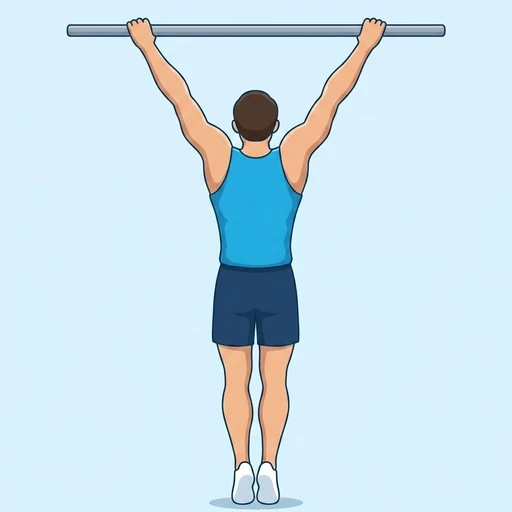

Behind-the-Neck Pull-Up
A wide-grip pull-up pulled high enough that the bar passes behind the head at the top instead of under the chin, which forces the shoulders into end-range external rotation.
Back · Pull-Up Bar · Advanced


Muscles worked by the Behind-the-Neck Pull-Up
Primary
Secondary
Also called: lats, lat, latissimus dorsi, latissimus, back wings.
Equipment
Also called: chin-up bar, chin up bar, power tower, pull up bar, doorway bar.
How to do the Behind-the-Neck Pull-Up
- Grip the pull-up bar with an overhand grip wider than shoulder-width and hang at full arm extension with your legs together.
- Keep your torso vertical rather than leaning back, and pull your elbows down and out to the sides.
- Continue pulling until the bar passes behind your head and the back of your neck comes level with it, without letting the bar touch your neck.
- Lower yourself under control back to a full dead hang, keeping your head still rather than letting it snap forward.
- Repeat for the desired number of reps.
Form tips
- This variation is widely discouraged. Finishing behind the head loads the shoulder at the end of its external rotation, where the joint has the least capacity to protect itself, and any contact between the bar and the neck puts that load through the cervical spine.
- A standard or wide-grip pull-up trains the same muscles through the same shoulder range — nothing about back development requires the bar to travel behind the head, so there is no benefit here to trade the risk against.
- If you perform it anyway, stop well short of touching the bar to your neck and leave it out entirely if you lack full pain-free overhead shoulder mobility or have any history of shoulder or neck problems.
At a glance
| Body part | Back |
|---|---|
| Category | Strength |
| Force type | Pull |
| Mechanic | Compound |
| Difficulty | Advanced |
| Equipment | Pull-Up Bar |
| Goals | Hypertrophy, Strength |
| Tags | Knee safe, No axial load, Lower back safe |
| MET | 6.0 (metabolic equivalent, for calorie estimates) |
| Unilateral | No |
| Bodyweight | No |
| Dataset id | behind-the-neck-pull-ups |
Behind-the-Neck Pull-Up in German & Spanish
| German | Klimmzug in den Nacken |
|---|---|
| Spanish | Dominada tras nuca |
Descriptions, instructions and tips ship in all three languages in the JSON.
Related exercises
Exercise data (JSON)
The record below is exactly what exercises.json ships for this exercise — names, descriptions, instructions and tips in English, German and Spanish.
{
"id": "behind-the-neck-pull-ups",
"name_en": "Behind-the-Neck Pull-Up",
"name_de": "Klimmzug in den Nacken",
"name_es": "Dominada tras nuca",
"description_en": "A wide-grip pull-up pulled high enough that the bar passes behind the head at the top instead of under the chin, which forces the shoulders into end-range external rotation.",
"description_de": "Ein Klimmzug im weiten Obergriff, bei dem so hoch gezogen wird, dass die Stange am oberen Punkt hinter dem Kopf statt unter dem Kinn liegt, was die Schultern in die maximale Außenrotation zwingt.",
"description_es": "Una dominada con agarre ancho en la que se tira lo suficientemente alto como para que la barra pase por detrás de la cabeza en lugar de por debajo de la barbilla, lo que obliga a los hombros a llegar al final de su rotación externa.",
"category": "strength",
"force_type": "pull",
"mechanic": "compound",
"difficulty": "advanced",
"equipment": "pull_up_bar",
"body_part": "back",
"primary_muscles": [
"latissimus_dorsi"
],
"secondary_muscles": [
"biceps_brachii",
"posterior_deltoid",
"rhomboids",
"trapezius"
],
"goals": [
"hypertrophy",
"strength"
],
"tags": [
"knee_safe",
"no_axial_load",
"lower_back_safe"
],
"variation_group": "pull-up",
"is_unilateral": false,
"is_bodyweight": false,
"instructions_en": [
"Grip the pull-up bar with an overhand grip wider than shoulder-width and hang at full arm extension with your legs together.",
"Keep your torso vertical rather than leaning back, and pull your elbows down and out to the sides.",
"Continue pulling until the bar passes behind your head and the back of your neck comes level with it, without letting the bar touch your neck.",
"Lower yourself under control back to a full dead hang, keeping your head still rather than letting it snap forward.",
"Repeat for the desired number of reps."
],
"instructions_de": [
"Greif die Klimmzugstange im Obergriff deutlich weiter als schulterbreit und häng dich mit gestreckten Armen und geschlossenen Beinen aus.",
"Halte den Oberkörper aufrecht, statt dich zurückzulehnen, und zieh die Ellbogen nach unten und zur Seite.",
"Zieh weiter, bis die Stange hinter den Kopf wandert und der Nacken auf ihre Höhe kommt, ohne dass die Stange den Nacken berührt.",
"Lass dich kontrolliert bis in den vollen Hang zurück und halte den Kopf dabei ruhig, statt ihn nach vorn schnellen zu lassen.",
"Wiederhole für die gewünschte Anzahl an Wiederholungen."
],
"instructions_es": [
"Sujeta la barra de dominadas en pronación, con las manos más separadas que los hombros, y cuélgate con los brazos extendidos y las piernas juntas.",
"Mantén el torso vertical en lugar de inclinarte hacia atrás y tira de los codos hacia abajo y hacia los lados.",
"Sigue tirando hasta que la barra pase por detrás de la cabeza y la nuca quede a su altura, sin que la barra llegue a tocarte el cuello.",
"Baja de forma controlada hasta la suspensión completa, manteniendo la cabeza quieta en lugar de dejar que se desplace hacia adelante.",
"Repite el número de repeticiones deseado."
],
"tips_en": [
"This variation is widely discouraged. Finishing behind the head loads the shoulder at the end of its external rotation, where the joint has the least capacity to protect itself, and any contact between the bar and the neck puts that load through the cervical spine.",
"A standard or wide-grip pull-up trains the same muscles through the same shoulder range — nothing about back development requires the bar to travel behind the head, so there is no benefit here to trade the risk against.",
"If you perform it anyway, stop well short of touching the bar to your neck and leave it out entirely if you lack full pain-free overhead shoulder mobility or have any history of shoulder or neck problems."
],
"tips_de": [
"Von dieser Variante wird weithin abgeraten. Der Abschluss hinter dem Kopf belastet die Schulter am Ende ihrer Außenrotation, wo das Gelenk sich am wenigsten schützen kann, und jeder Kontakt zwischen Stange und Nacken leitet diese Last in die Halswirbelsäule.",
"Ein normaler oder weiter Klimmzug trainiert dieselben Muskeln über denselben Bewegungsumfang der Schulter — für den Rücken bringt es nichts, die Stange hinter den Kopf zu führen, dem Risiko steht also kein Nutzen gegenüber.",
"Wer die Übung trotzdem macht, hört deutlich vor dem Kontakt zwischen Stange und Nacken auf und lässt sie ganz weg, wenn die Schulter über Kopf nicht schmerzfrei voll beweglich ist oder Schulter- oder Nackenprobleme bestehen."
],
"tips_es": [
"Esta variante está desaconsejada de forma generalizada. Terminar por detrás de la cabeza carga el hombro en el final de su rotación externa, donde la articulación tiene menos capacidad de protegerse, y cualquier contacto entre la barra y el cuello transmite esa carga a la columna cervical.",
"Una dominada normal o con agarre ancho trabaja los mismos músculos en el mismo rango de movimiento del hombro: nada en el desarrollo de la espalda exige que la barra pase por detrás de la cabeza, así que no hay ningún beneficio que compense el riesgo.",
"Si aun así la haces, detente bastante antes de que la barra toque el cuello, y descártala por completo si no tienes movilidad de hombro completa y sin dolor por encima de la cabeza o si tienes antecedentes de problemas de hombro o cuello."
],
"met": 6.0,
"images": {
"flat": {
"start": "images/flat/behind-the-neck-pull-ups-start.webp",
"peak": "images/flat/behind-the-neck-pull-ups-peak.webp"
}
}
}Fetch just this exercise
const { exercises } = await fetch(
"https://exercise-dataset.com/exercises.json"
).then(r => r.json());
const ex = exercises.find(e => e.id === "behind-the-neck-pull-ups");Free for personal and commercial in-app use with attribution (“Exercise data by RepDB”) — see the license and ready-made attribution snippets. Redistributing the data as a dataset or API is not permitted.